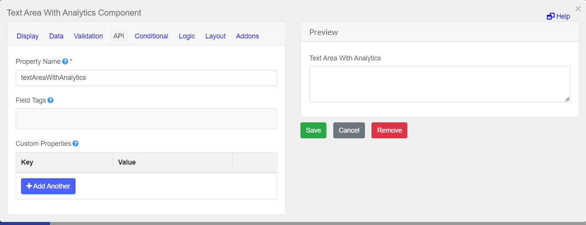

Sentiment Analysis
Sentiment analysis is used to understand the customer's sentiments toward products, movies, and other such things, whether they feel positive, negative, or neutral about it. BERT is a perfect pre-trained language model which helps machines learn excellent representations of text with respect to the context in many natural language tasks.
Data Analysis API
Data Analysis API is used to understand the customer's sentiments whether they feel positive, negative, or neutral about it.
Make sure your current working directory is cd {Your Directory}/forms-flow-ai/forms-flow-data-analysis-api
This feature requires the following env:
DATA_ANALYSIS_API_BASE_URL=http://{your-ip-address}:{port}
POST API for sentiment analysis
POST
{{DATA_ANALYSIS_API_BASE_URL}}/sentiment.
HEADERS
Authorization Bearer {{token}}
Content-Type application/json
BODY
{
"applicationId":"{valid applicationId}",
"formUrl":"{valid formUrl}",
"data":[{
"text":"bad service",
"elementId":""
}]
}
RESPONSE
{
"overallSentiment": "NEGATIVE"
}
Model Description
This is a fine-tuned downstream version of the bert-base-uncased model for sentiment analysis, this model is not intended for further downstream fine-tuning for any other tasks. This model is trained on a classified dataset for text classification.
How To Use the Sentiment Analysis Component
One of the unique features of the formsflow.ai framework is Sentiment Analysis. It can analyze the sentiment from forms based on specific topics specified by the designer during form creation.
- A form designer can drag and drop Text Area with Analytics component and associated with the corresponding workflow. This activates the Sentiment Analysis component.
- Based on the input responses of the user, formsflow.ai process sentiment is associated with each user's responses and the response will be patched to submission data by the Camunda listener. For this it requires the following env:

DATA_ANALYSIS_URL=http://{your-ip-address}:{port}/analysis
`org.camunda.bpm.extension.hooks.delegates.FormTextAnalysisDelegate`
Refer to the sample shown below: